Path of Leash Resistance
Tu humano va pegado al móvil y camina con el piloto automático. Tú estás al otro lado de la correa, y tienes tus propios recados.

Gratis. Sin anuncios, sin compras, sin cuenta. Teclado, mando o táctil.
Qué haces
Pilota el piloto automático
Una tensión constante decide hacia dónde va tu humano pegado al móvil. Tira demasiado fuerte y se le acaba la paciencia con una corrección que ves venir — salvo que te plantes antes.
Usa el agarre, la correa floja y los postes
Tu humano pesa cuatro veces más que tú en un tirón directo. Plántate para aguantar, tensa la correa cuando la recoge, desliza por bordillos para hacer combos o enróllate en los postes para lanzarlo.
Acaba los recados antes de la puerta
Marca farolas, olfatea arbustos, arrastra comida caída, persigue gatos, huye de las barredoras y llega a la zona sin correa con el móvil intacto.
En el paseo
- La correa tiene física real de cuerda: enróllala en postes, plántate y gana el tira y afloja
- Un humano que responde a la correa: un tirón constante lo guía, tirar sin parar le agota la paciencia
- Cuarenta y seis paseos hechos a mano por Barcelona y un tutorial, haga el tiempo que haga, de día o de noche
- Siete perros, cada uno con su habilidad y su meta de habilidad
- Tesoros enterrados que olfatear, y entrenamiento para gastar en sus cualidades
- Cada paseo acaba sin correa, con agilidad, tira y afloja y frisbi
- Listas de metas en cada paseo, con estrellas que desbloquean nuevos paseos
- Un personaje con retos en cada paseo, cada uno con su melodía
- Trucos de correa: giros en postes, ochos, pasar entre dos personas y deslizarse por bordillos y barandillas
- Nueve paseos de persecución: la barredora, la riada, la clínica, los jabalíes, el correfoc, la carroza del Dimoni, la seguridad del aeropuerto, la pisanieves desbocada y las cabras de montaña
- Cuatro jefes estatua: El Mamut de piedra, Els Lleons de bronce, El Drac de trencadís y El Gat, un gato de bronce del tamaño de un coche
- Estados de ánimo del perro: miedo, ladridos, locura y cansancio, que cambian cómo te mueves y qué percibes
- Suelo que se siente: el césped y el barro guardan el olor, la arena frena y el suelo mojado y la nieve hacen patinar
- Otros perros y sus humanos con vida propia: olfatean, marcan, saludan y se enredan
- Nueve cielos y seis horas del día que cambian cómo se juega cada paseo
- Huesos para gastar en collares, bandanas y pelajes
- En inglés, catalán y castellano, con sacudidas de pantalla, destellos, tamaño del texto y controles ajustables
- Compatibilidad total con mando, y un tutorial en tres partes para nuevos jugadores
- Sin anuncios, sin compras, sin cuenta, y funciona sin conexión
Novedades
- Tres nuevos paseos, cuarenta y dos en total. Sarrià, el antiguo pueblo al alba, donde las campanas de Sant Vicenç dan la hora. El Metro, bajando de la lluvia para hacer una parada en hora punta. Y Carrer de Blai, la calle de pintxos del Poble-sec de noche, donde tu humano dice «¡Déjalo!» ante cada pintxo caído.
- Un aspecto nuevo, Trencadís: azafrán, turquesa y magenta sobre azul marino oscuro, con nuevas fuentes en cada pantalla.
- El Barri, Plaça Reial y L'Estació rehechos: aceras de panot de flor y pasos de cebra, soportales iluminados de noche y una cafetería de estación con viajeros saliendo en oleada en cada aviso de tren.
- Quien propone retos en cada paseo ahora se mueve y tiene su propia melodía. Los retos muestran qué cuenta: la locura es gratis mientras duran y los postes y árboles que rodear llevan un aro marcado.
- El giro al poste, mejorado: enrolla a tu humano alrededor de un poste y sale volando en horizontal como una pelota atada, dando vueltas cada vez más rápido, y ¡ZAS!
- La correa, mejorada: las vueltas dibujan un bucle alrededor del tronco, la correa toma el color de tu collar, se engancha al arnés y entra en un carrete en la mano de tu humano.
Cuarenta y siete paseos en cinco capítulos
Y el Primer paseo, al principio de la correa. Elige cualquier paseo para ver sus notas, capturas y metas (en inglés).
Capítulo 1
12 paseos · Termina con un jefe: La Ciutadella (El Mamut)
 TutorialFirst WalkAprende la correa, truco a truco
TutorialFirst WalkAprende la correa, truco a truco
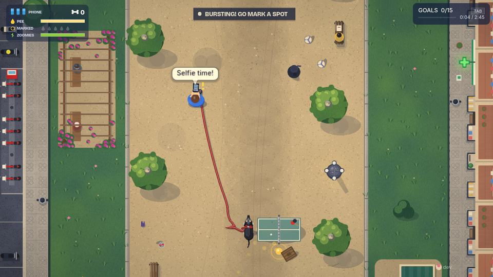
El BarriEl parquecito al final de tu calle La RamblaEl paseo abarrotado
La RamblaEl paseo abarrotado
 El ParcEl parque y su estanque de patos
El ParcEl parque y su estanque de patos
 Viento, albaPasseig MarítimEl paseo de la playa
Viento, albaPasseig MarítimEl paseo de la playa
 PersecuciónDespejado, albaLa NetejaLa limpieza de la ciudad al amanecer
PersecuciónDespejado, albaLa NetejaLa limpieza de la ciudad al amanecer
 El GòticLos callejones del casco antiguo
El GòticLos callejones del casco antiguo
 MontjuïcLa subida serpenteante al castillo
MontjuïcLa subida serpenteante al castillo
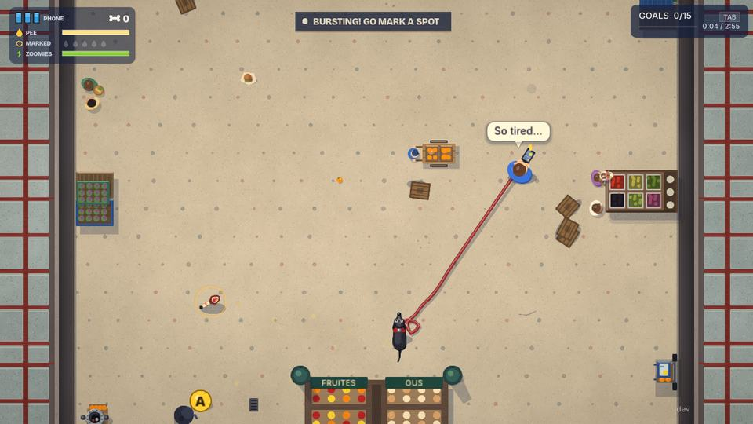
El MercatEl mercado cubierto al abrir Lluvia, díaEl DiluviCalle de tiendas bajo el chaparrón
Lluvia, díaEl DiluviCalle de tiendas bajo el chaparrón
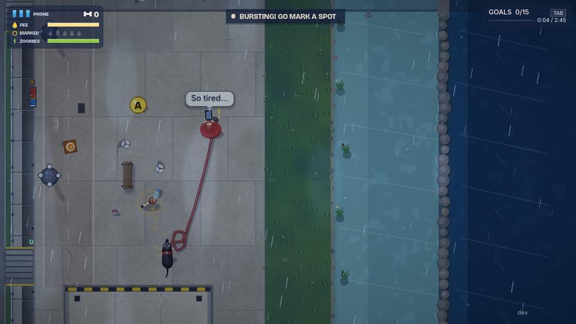
PersecuciónStorm, díaEl BesòsEl parque fluvial que se inunda JefeLa CiutadellaLa vieja ciudadela y su mamut
JefeLa CiutadellaLa vieja ciudadela y su mamut
Capítulo 2
10 paseos · Termina con un jefe: El Mosaic (El Drac)
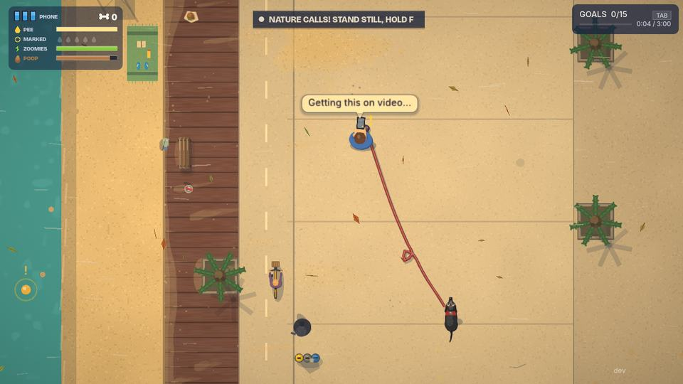
Viento, díaPlatja de LlevantLa playa de perros de la costa L'EixampleLa cuadrícula de chaflanes
L'EixampleLa cuadrícula de chaflanes
 Niebla, morningEl TibidaboLa cima y sus atracciones
Niebla, morningEl TibidaboLa cima y sus atracciones
 PersecuciónEl VeterinariUna visita al veterinario
PersecuciónEl VeterinariUna visita al veterinario
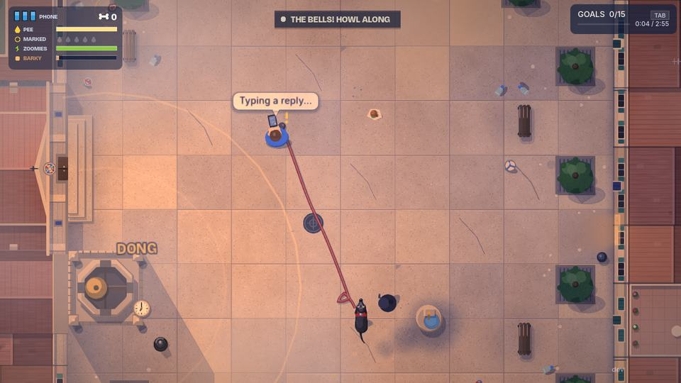
Despejado, albaSarriàEl pueblo que se tragó la ciudad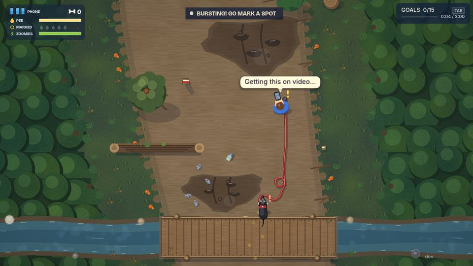
El BoscUn sendero por el bosque Els ÀngelsLa plaza de los patinadores
Els ÀngelsLa plaza de los patinadores
 Despejado, nocheLa CastanyadaLa fiesta de las castañas
Despejado, nocheLa CastanyadaLa fiesta de las castañas
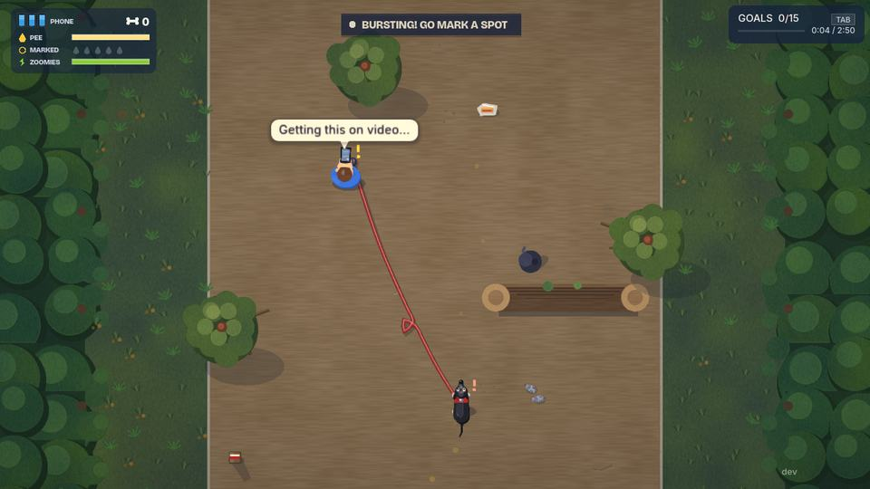
PersecuciónEls SenglarsEl descenso salvaje por Collserola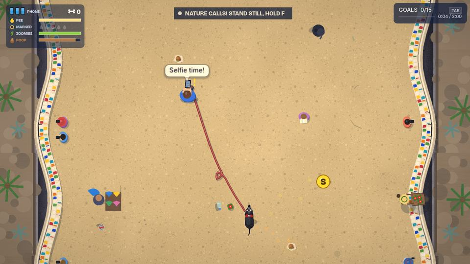
JefeEl MosaicMosaicos y columnas de piedraCapítulo 3
7 paseos · Culmina en El Fòrum
 Despejado, morningLa SuperillaEl eje verde para peatones
Despejado, morningLa SuperillaEl eje verde para peatones
 Lluvia, díaEl MetroHora punta, una parada de metro
Lluvia, díaEl MetroHora punta, una parada de metro
 L'EstacióHora punta en la estación de tren
L'EstacióHora punta en la estación de tren
 Despejado, atardecerEls BúnquersEl mirador del atardecer
Despejado, atardecerEls BúnquersEl mirador del atardecer
 Despejado, nochePlaça ReialLa plaza porticada junto a La Rambla
Despejado, nochePlaça ReialLa plaza porticada junto a La Rambla
 PersecuciónDespejado, nocheLa CremadaBadalona quema a su Dimoni
PersecuciónDespejado, nocheLa CremadaBadalona quema a su Dimoni
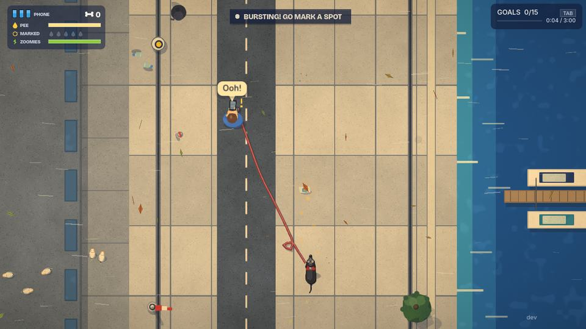
Viento, díaEl FòrumLa pérgola solar junto al marCapítulo 4
7 paseos · Termina con un jefe: El Port (Els Lleons)
 La DiagonalLa avenida que corta la cuadrícula
La DiagonalLa avenida que corta la cuadrícula
 Despejado, nocheCarrer de BlaiPintxos, y comida por el suelo
Despejado, nocheCarrer de BlaiPintxos, y comida por el suelo
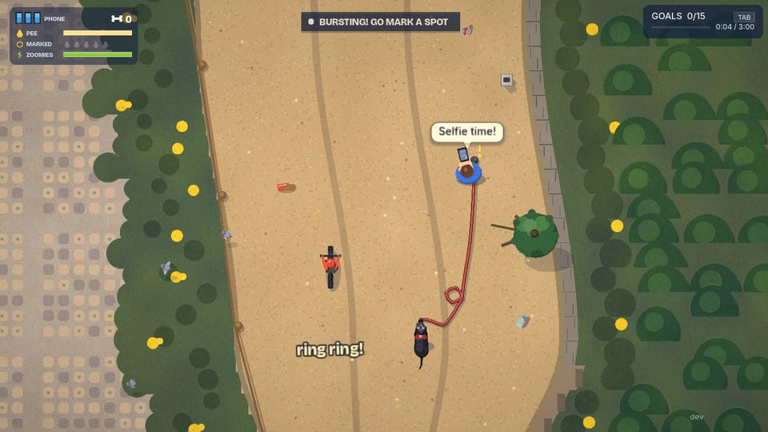
La Carretera de les AigüesEl viejo camino del agua en el monte PersecuciónDespejado, nocheFesta de GràciaLa fiesta de las calles adornadas
PersecuciónDespejado, nocheFesta de GràciaLa fiesta de las calles adornadas
 Drizzle, díaEl Laberint d'HortaEl laberint de cipreses
Drizzle, díaEl Laberint d'HortaEl laberint de cipreses
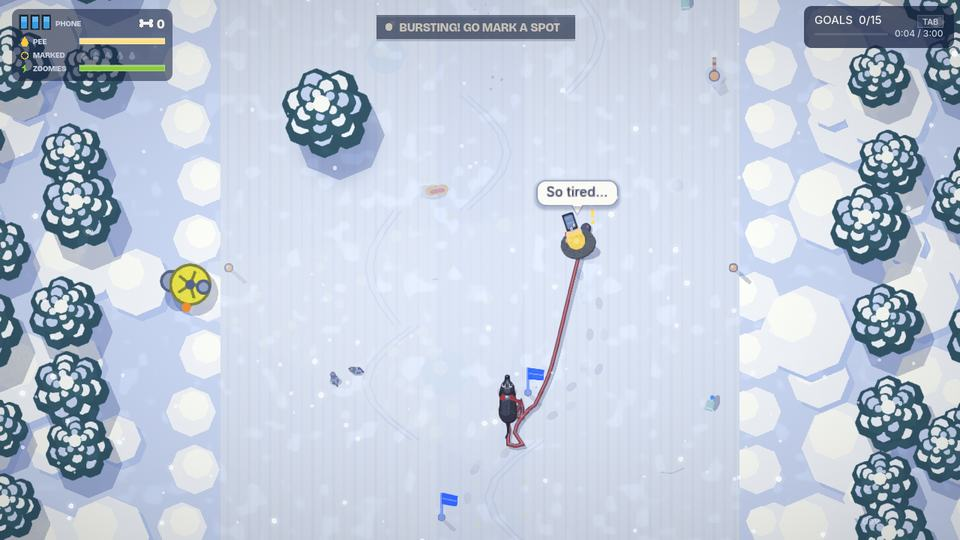
PersecuciónNieve, díaLa MolinaLa pista y la pisanieves desbocada JefeEl PortLa lonja de pescado del muelle
JefeEl PortLa lonja de pescado del muelle
Capítulo 5
12 paseos · Termina con un jefe: Rambla del Raval (El Gat)
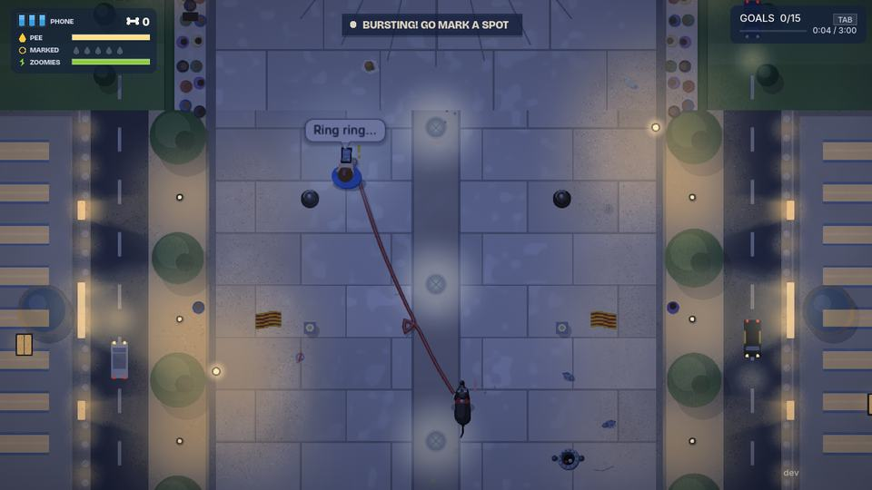
Despejado, nochePlaça d'EspanyaLas fuentes mágicas bajo el palacio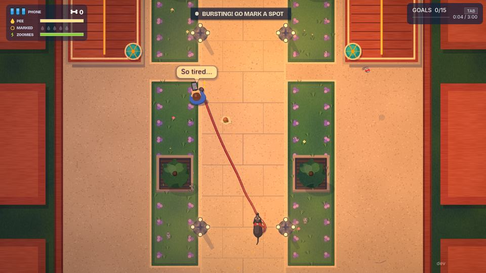
Despejado, atardecerSant PauLos jardines del hospital modernista El Poble EspanyolUn pueblo amurallado de copias
El Poble EspanyolUn pueblo amurallado de copias
 Viento, díaSitgesCalles encaladas junto al mar
Viento, díaSitgesCalles encaladas junto al mar
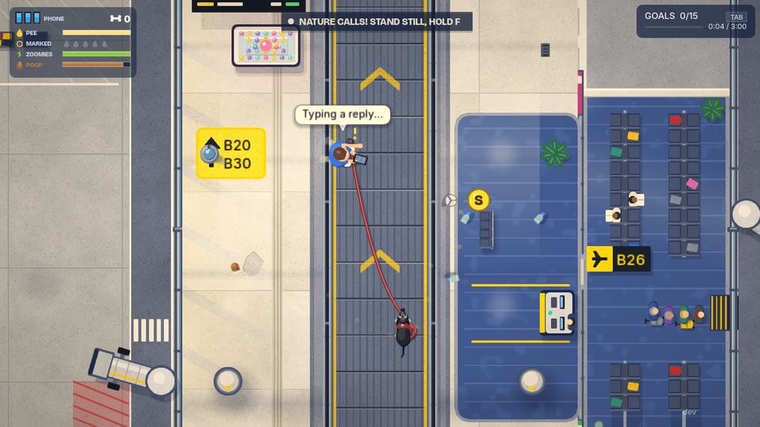
PersecuciónL'AeroportLa Terminal 1, con seguridad detrás Les ObresUn desvío entre las obras
Les ObresUn desvío entre las obras
 Viento, díaCamí de RondaEl camino de ronda sobre las calas
Viento, díaCamí de RondaEl camino de ronda sobre las calas
 Despejado, nocheDia de PartitDía de partido en el estadio
Despejado, nocheDia de PartitDía de partido en el estadio
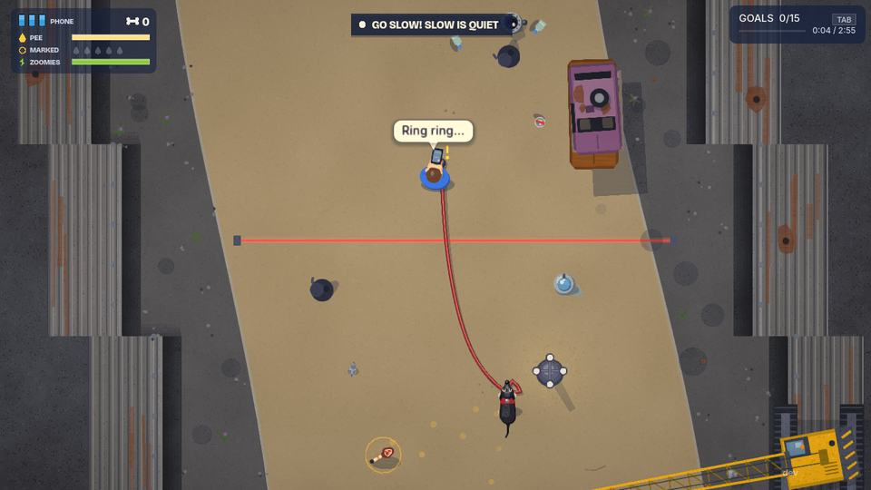
La FerrallaEl desguace después de cerrar PersecuciónMontserratSenderos de montaña y cabras sueltas
PersecuciónMontserratSenderos de montaña y cabras sueltas
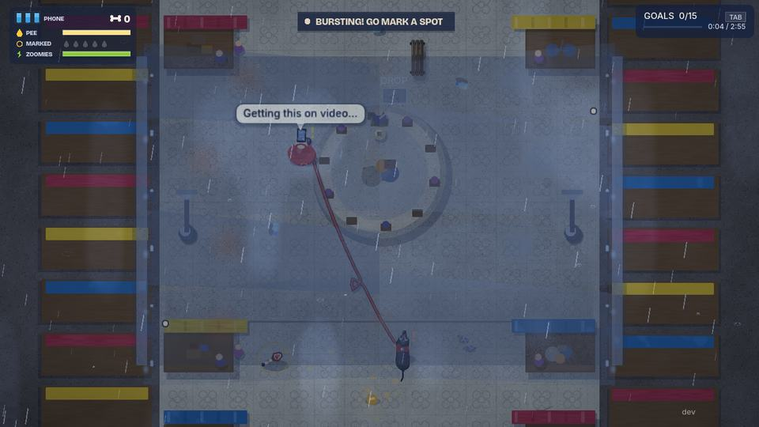
Lluvia, díaEls EncantsTrastos y puestos bajo el espejo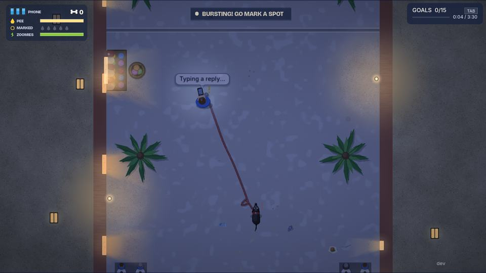
JefeDespejado, nocheRambla del RavalDonde se sienta el gato de bronceLos cuatro jefes
Cuatro capítulos terminan con un monumento de Barcelona que baja de su pedestal para ajustar cuentas con tu correa.
 Jefe del capítulo 1El Mamut (La Ciutadella)El mamut de piedra a tamaño real junto a la cascada del Parc de la Ciutadella baja de su pedestal. Enróllalo o haz que cargue directo al estanque de las barcas.
Jefe del capítulo 1El Mamut (La Ciutadella)El mamut de piedra a tamaño real junto a la cascada del Parc de la Ciutadella baja de su pedestal. Enróllalo o haz que cargue directo al estanque de las barcas.
 Jefe del capítulo 2El Drac (El Mosaic)El dragón de trencadís guarda la escalinata. Enrolla la correa en las columnas de piedra, esquiva el coletazo y hazle tropezar en las baldosas.
Jefe del capítulo 2El Drac (El Mosaic)El dragón de trencadís guarda la escalinata. Enrolla la correa en las columnas de piedra, esquiva el coletazo y hazle tropezar en las baldosas.
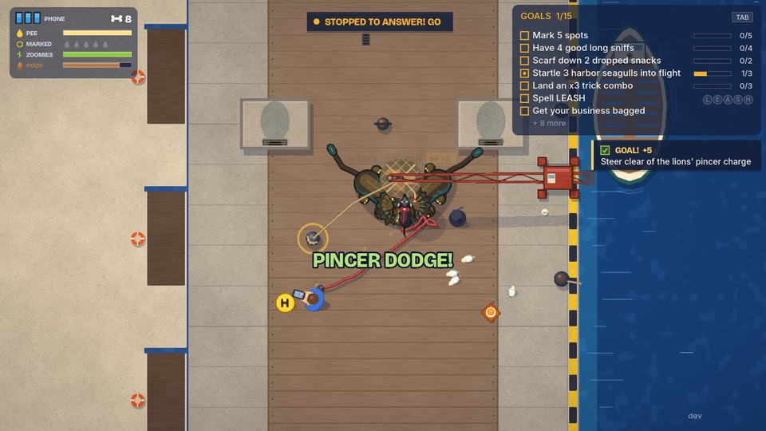
Jefe del capítulo 4Els Lleons (El Port)Dos leones de bronce guardan la columna de Colón en el muelle. Llévalos a embestirte en pinza alrededor de los noráis de hierro y que choquen entre ellos. Jefe del capítulo 5El Gat (Rambla del Raval)El gato de bronce gordo de la Rambla del Raval ronda bajo las palmeras, espanta a las palomas y salta de toldo en toldo hasta que le lanzas a tu humano encima.
Jefe del capítulo 5El Gat (Rambla del Raval)El gato de bronce gordo de la Rambla del Raval ronda bajo las palmeras, espanta a las palomas y salta de toldo en toldo hasta que le lanzas a tu humano encima.
Las persecuciones
Nueve paseos se giran en la puerta: llega al punto de vuelta y todo el camino a casa se convierte en una persecución.


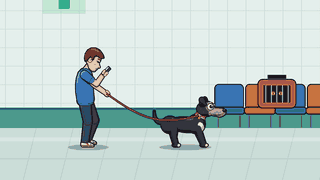


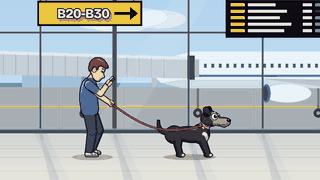


- La Neteja
- El Besòs
- El Veterinari
- Els Senglars
- Festa de Gràcia
- La Cremada
- L'Aeroport
- La Molina
- Montserrat
Siete perros
Millie pasea contigo desde el principio; las estrellas que ganas abren seis más. Cada una se mueve, tira y se planta a su manera, y cada una tiene una habilidad con su propia meta en cada paseo.

Millie
De inicioMestiza · Todoterreno
De todo un poco, maestra del olfateo
El olfato Desentierra un tesoro escondido

Pipa
15 estrellasGalgo · Rápida, se planta poco
Una galga relámpago que odia plantarse
El esprint Esprinta a tope 2 segundos
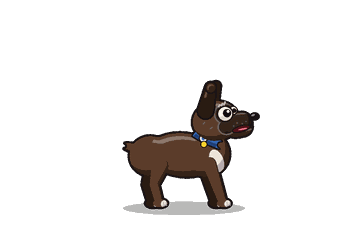
Mochi
25 estrellasBulldog francés · Se planta fuerte, lento
Un tanque pequeño y testarudo que no se mueve
La plantada Haz tropezar a tu humano 2 veces
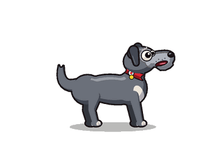
Bruna
35 estrellasPerro de pastor catalán · Guía a tu humano, se ensucia
Una perra pastora peluda que guía a tu humano sin esfuerzo
El pastoreo Guía a tu humano 5 segundos

Tito
45 estrellasChihuahua · Se cuela por todo, fácil de arrastrar
Un chihuahua diminuto que se cuela entre obstáculos y recoge la correa enseguida
El hueco Cuélate por 3 huecos estrechos
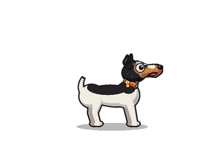
Perla
55 estrellasRatonero bodeguero · Lo desentierra todo, ágil
Una ratonera tricolor de bodega que desentierra más rápido que nadie
La excavación Desentierra 2 hoyos

Duna
65 estrellasPodenco · Salta bancos, zancada larga
Una podenca roja y blanca que salta un banco desde parada
El salto Salta 2 bancos
Vestuario, entrenamiento y Nuevo look
Entre paseo y paseo, gasta huesos en collares, bandanas y pelajes, entrena a cada perro con los puntos que gana o elige un Nuevo look para tu humano.
Collares
Dan color a la propia correa.
Bandanas
Una tela al cuello, si quieres (5 colores).
Pelajes
Pelajes y manchas (6 estilos).
Entrenamiento y Nuevo look
Cada tesoro que desentierra y cada meta de habilidad que cumple le da un punto de entrenamiento. Cada perro nace con ventaja en aquello para lo que se crio; gasta los puntos en 5 cualidades (Velocidad, Agarre, Guía, Agilidad, Olfato), hasta 5 niveles cada una, y cada nivel cuesta tantos puntos como el nivel al que llega. Antes de salir, elige un Nuevo look para tu humano: 6 tonos de piel, 6 colores de pelo, 8 peinados, 8 camisetas, 5 pantalones y 4 zapatos.